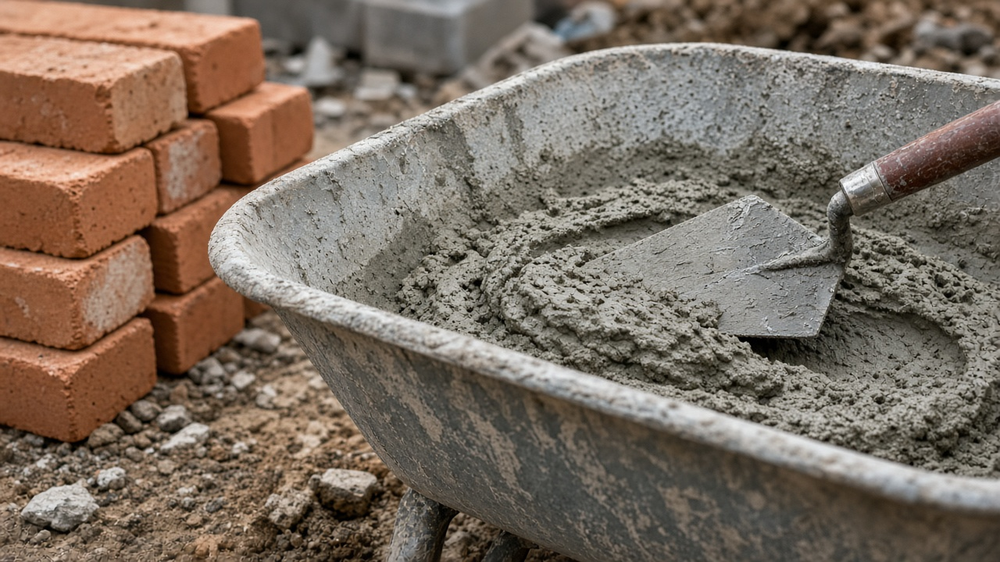

Mortar Smash › Mortar types N, S, M and O
Short answer
Use Type N for most above-grade brick and block walls, Type S for below-grade, retaining and high-lateral-load work, Type M only for heavy loads or hard units, and Type O for soft historic brick indoors or similarly gentle work. ASTM C270 sets the compressive-strength targets; a mortar harder than the brick is usually the wrong call on a house wall.

ASTM C270 types at a glance
ASTM C270 classifies masonry mortar by average compressive strength (and by proportion specs). The four types bricklayers meet most often:
| Type | Typical strength | Typical jobs |
|---|---|---|
| N | ~750 psi (5.2 MPa) | General above-grade brick, stone and block; interior load-bearing; most house walls |
| S | ~1,800 psi (12.4 MPa) | Below grade, foundations, retaining walls, pavements, higher wind or earth pressure |
| M | ~2,500 psi (17.2 MPa) | Heavy loads, hard stone, severe below-grade or paving; avoid on soft brick |
| O | ~350 psi (2.4 MPa) | Interior non-load-bearing; soft or historic brick that needs a weak, lime-rich joint |
Figures are the ASTM C270 property-specification averages commonly cited for cement-lime mortars. Always follow the project specification, the brick maker’s guidance and local building rules. See also our mortar calculator for bag quantities once the mix type is chosen, and the repointing tips for matching joint mortar to old work.
Why softer can be stronger in service
Brick and mortar share load. A joint that is much harder and less permeable than the brick forces freeze–thaw and movement stresses into the face of the unit. On ordinary facing brick that is why Type N (or a UK 1:1:5–6 style mix) often outlasts a habit of Type S everywhere. Save Type S and M for the jobs that actually need the extra compressive and bond strength.
Proportion vs property specs
ASTM C270 lets a mix qualify either by proportion (fixed cement:lime:sand volumes) or by property (lab-tested strength and water retention). Site-mixed bags labelled Type N or S are usually proportion mixes. Pre-bagged masonry cement or mortar cement products should state the ASTM type on the bag; do not assume a “general purpose” bag is Type N without reading it.
Mortar type FAQ
What is Type N mortar used for?
Type N is a medium-strength general-purpose mortar, typically about 750 psi (5.2 MPa) average compressive strength under ASTM C270. It suits above-grade exterior and interior load-bearing and non-load-bearing walls of brick, stone and concrete masonry when the wall is not heavily loaded or exposed to severe freezing with high moisture.
What is Type S mortar used for?
Type S is a higher-strength mortar, about 1,800 psi (12.4 MPa) average under ASTM C270. It is the usual choice for below-grade walls, foundations, retaining walls, pavements and any masonry that needs higher lateral strength from wind or earth pressure.
What is Type M mortar used for?
Type M is the strongest common masonry mortar, about 2,500 psi (17.2 MPa) average. It is for heavy loads, hard stone, below-grade work and paving where strength matters more than flexibility. It is often too stiff and impermeable for soft historic brick.
What is Type O mortar used for?
Type O is a low-strength, high-lime mortar (about 350 psi / 2.4 MPa). It is for interior non-load-bearing walls and for soft, historic or highly permeable brick where a harder cement mortar would damage the units. It is not for exterior walls that see freeze–thaw with wet joints.
Should I use Type S on every exterior brick wall?
No. On ordinary above-grade house walls, Type N is usually the better match: strong enough for the load, and more flexible and vapour-permeable than Type S or M. Using a mortar harder than the brick concentrates stress in the brick face and can cause spalling. Match mortar to the unit and the exposure, not to a habit of always pouring Type S.
Do UK bricklayers use the same N/S/M/O labels?
The ASTM letter types are a US (and Canadian) classification. In the UK and much of Europe, bricklayers specify cement:lime:sand or cement:sand ratios (for example 1:1:6 or 1:4) and designate by compressive strength class under BS EN 998-2. The jobs those mixes suit still line up: a medium 1:1:5–6 style mix for general brickwork, richer mixes for engineering brick and below-grade work, and lime-rich mixes for soft brick.
Related tools
- Mortar calculator — wet mortar, cement and sand for a brick count or wall area
- Brick calculator — bricks plus mortar for UK, US, EU and AU sizes
- Brick care and repointing — matching mortar to existing joints
Last updated 5 November 2026. General information only; not a substitute for a structural specification or local code.